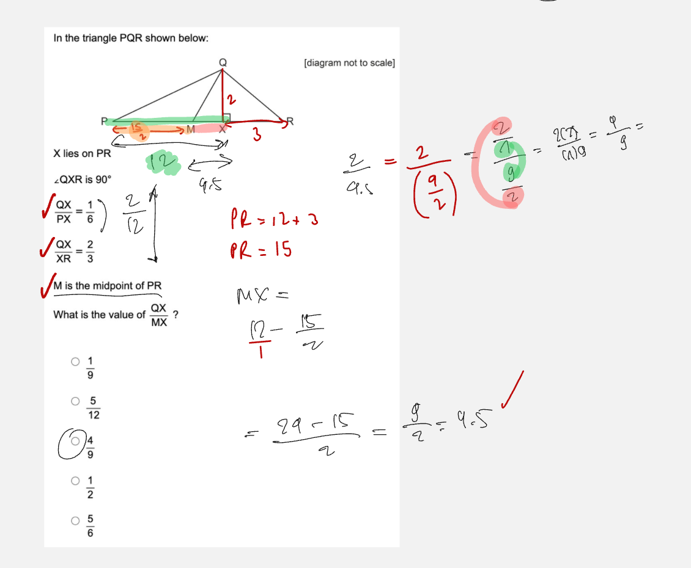

Ratio geometry: convert ratios into a scale model
Harry Maths lesson · 12 June 2026 · multi-step flashcard
Slack exercise image 01 + Gemini video theme: use every given fact.
Question / prompt
In triangle \(PQR\), \(X\) lies on \(PR\), \(\angle QXR=90^\circ\), \(\frac{QX}{PX}=\frac16\), \(\frac{QX}{XR}=\frac23\), and \(M\) is the midpoint of \(PR\). Find \(\frac{QX}{MX}\).

Step 1 · Choose the shared length
Strategy
Both ratios contain \(QX\), so set \(QX=2\) to make the second ratio direct.Work
\[\frac{QX}{XR}=\frac23,\quad QX=2\Rightarrow \frac{2}{XR}=\frac23\Rightarrow XR=3.\]Sense check: the ratio says QX is two parts and XR is three parts.
Step 2 · Find PX from the other ratio
Formula
\[\frac{QX}{PX}=\frac16\]Substitute
\[\frac{2}{PX}=\frac16\Rightarrow PX=12.\]Sense check: PX must be six times QX.
Step 3 · Use the midpoint outside the mask
Work
\[PR=PX+XR=12+3=15.\]\[PM=MR=\frac{15}{2}=7.5.\]Harry's lesson theme: if a given fact such as midpoint is unused, the solution is probably incomplete.
Step 4 · Compute the requested ratio
given: QX=2, PX=12, XR=3, PR=15, PM=7.5
Work
Since \(PX=12\) and \(PM=7.5\),\[MX=PX-PM=12-7.5=4.5=\frac92.\]\[\frac{QX}{MX}=\frac{2}{9/2}=\frac49.\]Final
\(\frac49\)Recognition + redo drill
Trigger: one segment appears in two ratios and the diagram also contains a midpoint. Normalise the shared segment before using midpoint information.
Clean mental model: QX is the vertical height; PX and XR are the two horizontal pieces around X. Once PX and XR are known, the midpoint of PR fixes M, and MX is just a distance along the same line.
Redo drill: If QX/PX=1/4 and QX/XR=3/5, set QX=3. Then PX=12, XR=5, PR=17, PM=8.5, and MX=3.5 if X is to the right of M. Always draw the order P--M--X--R or P--X--M--R before subtracting.
Deep study layer
Revision routine. Cover the grey work boxes and try to reproduce the next line before revealing it. The exercise is designed as active redo practice, not passive note reading. Read the question header first, decide the method, then reveal each step only after committing to the next calculation or graph decision.
Recognition trigger. This problem belongs to the lesson pattern where the first visible calculation is not always the right route. The safe habit is to identify the structure before doing arithmetic: ratio structure, factor structure, inequality structure, asymptote structure, periodic-graph structure, or horizontal-line-counting structure.
Exam technique. After obtaining a final answer, perform a one-line sanity check. For a ratio, check relative sizes. For algebra, substitute an easy value. For inequalities, test a value in each interval. For graphs, count intersections directly from the displayed interval rather than from memory of a standard full graph.
Phuc-specific repair. The lecture repeatedly exposed the same meta-error: a correct-looking intermediate calculation can still miss the point of the question. The repair is to ask, 'Which given fact have I not used yet?' before accepting the answer. This catches midpoint facts, sign reversals, domain/asymptote restrictions, and interval endpoints.
Active recall prompt. Write the core rule from memory before looking at the solution. If you cannot state the rule in one sentence, redo the concept card first, then come back to the multi-step card. This keeps the redo card from turning into pattern copying.
Transfer drill. Change one number or one interval and redo the method. If the method survives the changed values, you understand it. If the answer only works for the exact screenshot, make a new flashcard for the missing general rule.
Lesson-specific rule. Specific rule: shared ratio length first, midpoint second, requested ratio last. Never start with trigonometry unless the requested unknown actually depends on a right-triangle calculation.
Checkpoint pack
Checkpoint 1. Before revealing any working, name the topic and the exact operation required. Good answers sound like 'normalise a shared ratio', 'factor then handle a reversed sign', 'test the sign of a quadratic', 'read asymptotes from the formula', 'count intersections branch by branch', or 'draw horizontal lines across a transformed graph'.
Checkpoint 2. State the common wrong move. This forces the mistake into memory: unused midpoint, lost minus sign, wrong inside/outside inequality interval, moving the wrong asymptote, period-only counting, or copying a solution count from a different interval.
Checkpoint 3. Rebuild the solution without looking at the screenshot. The screenshot is a prompt, not the answer. If the solution depends on a visual annotation, translate that annotation into a written mathematical condition first.
Checkpoint 4. After the final line, ask whether the answer type matches the question type. A ratio question should end as a ratio; an inequality should end as intervals; an asymptote question should end as equations of lines; an exactly-two-solutions question should end as p-values.
One-minute redo. Cover the work and reproduce the whole solution in less than one minute. If it takes longer, isolate which transition failed and convert that transition into a smaller concept card.
Exam transfer. The marks in these questions come from method selection more than arithmetic. Train the trigger: when you see the same surface form in a new question, use the same method skeleton even if the numbers, graph interval, or notation change.
Final memory hook
Say aloud. I will not accept a calculation until every given condition has a job. I will not copy a graph count until I have checked the interval. I will not cancel algebra until I have factored and protected signs.
Mastery condition. This exercise is passed only when the method can be reproduced from the question header alone, without relying on the highlighted solution lines or the original annotated screenshot.